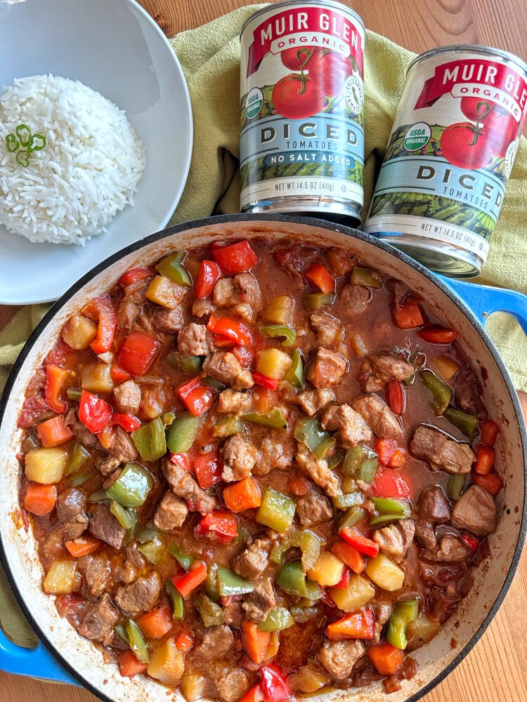
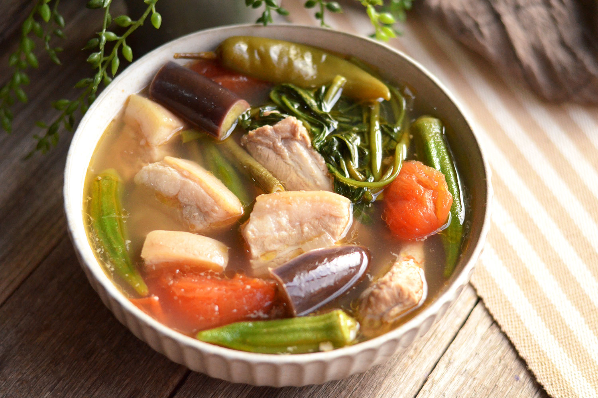
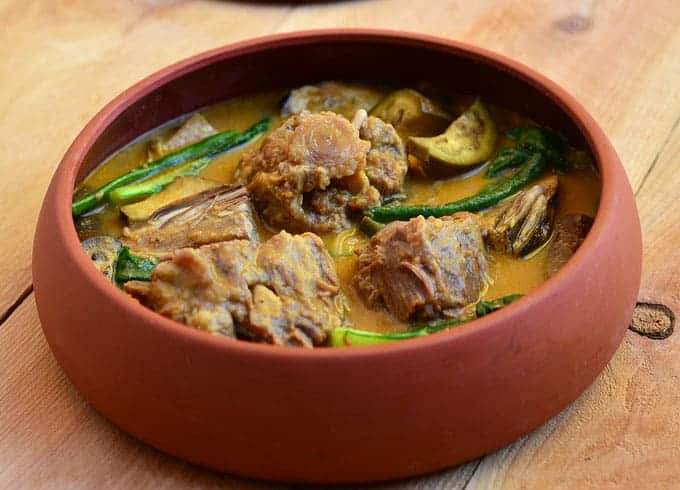

Let's start with the national dish of the Philippines! Adobo is a simple but hearty Filipino dish, featuring chicken marinated in vinegar and soy sauce, then slowly cooked with garlic and spices. Serve over steamed white rice.

If you're looking for an easy and delicious ulam recipe, try this Pork Menudo recipe that's ready in under an hour.
Sinigang is a sour soup native to the Philippines. This recipe uses pork as the main ingredient. Other proteins and seafood can also be used. Beef, shrimp, fish are commonly used to cook sinigang. The chicken version, on the other hand, is called sinampalukang manok.
This perennial Filipino favorite usually starts with a base of oxtails, beef stew cuts, pork hocks or tripe. Traditionally, the choice meat is simmered for hours to desired tenderness and and along with a variety of vegetables such as banana heart, long beans and eggplant, it's pulled together into a stew with ground peanuts for flavor, toasted ground rice for thickening and annatto for coloring. Because of the dish's very involved cooking process, it is usually reserved for special occasions but by using convenient rice flour and peanut butter, it is simplified enough to be everyday dinner-friendly.
